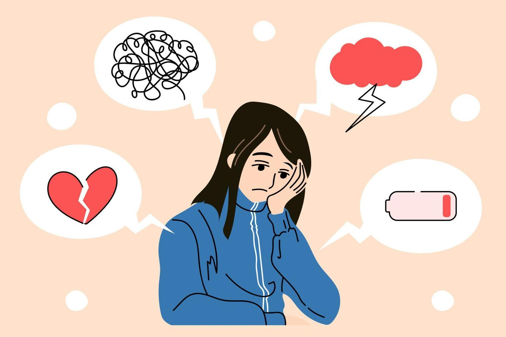
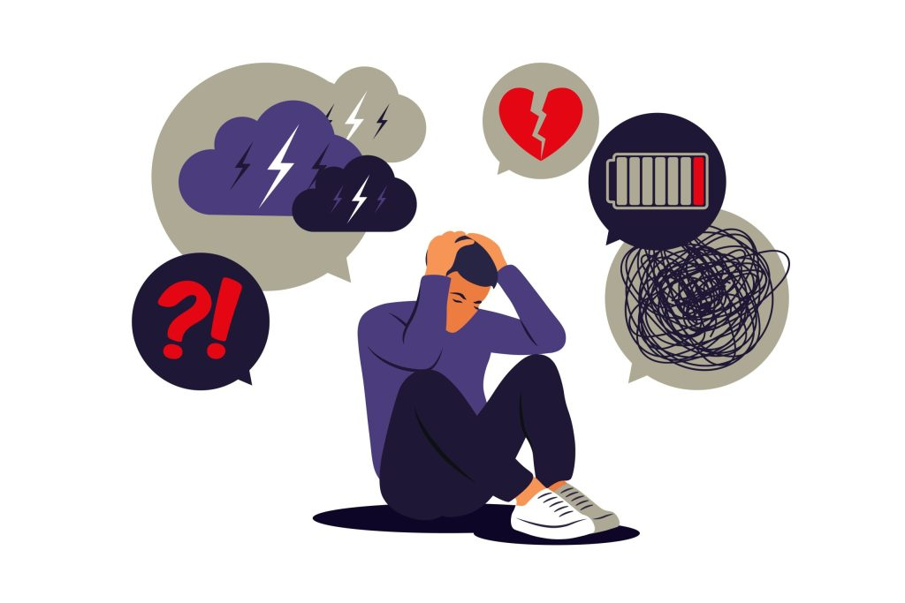
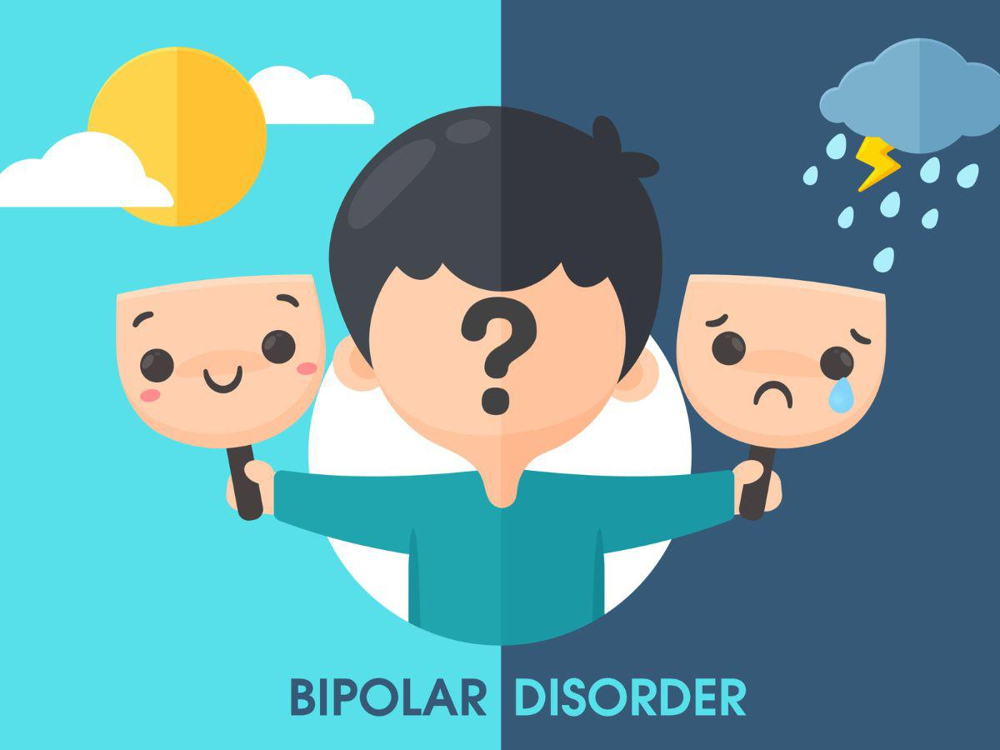
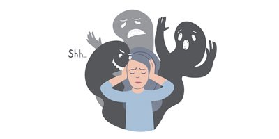

Tipos de Enfermedades Mentales
Depresión
Un trastorno del estado de ánimo que causa tristeza y pérdida de interés.
La depresión puede afectar la forma en que una persona piensa, siente y maneja las actividades diarias. Puede incluir síntomas como fatiga, cambios en el apetito y problemas de concentración.
Ansiedad
Incluye trastornos como el trastorno de ansiedad generalizada y ataques de pánico.
La ansiedad se caracteriza por sentimientos de preocupación y miedo, que pueden ser desproporcionados respecto a la situación. Puede manifestarse físicamente a través de palpitaciones y sudoración.
Trastorno Bipolar
Cambios extremos en el estado de ánimo.
El trastorno bipolar se caracteriza por episodios de manía y depresión. Las personas pueden experimentar cambios extremos en su energía, actividad y capacidad de funcionar.
Esquizofrenia
Afecta la forma en que una persona piensa y se comporta.
La esquizofrenia es un trastorno grave que puede incluir alucinaciones, delirios y pensamiento desorganizado. Es importante buscar tratamiento para manejar los síntomas.
Trastornos de la Alimentación

Afectan la relación con la comida.
Los trastornos de la alimentación incluyen condiciones como la anorexia y la bulimia, que pueden tener consecuencias graves para la salud física y mental.